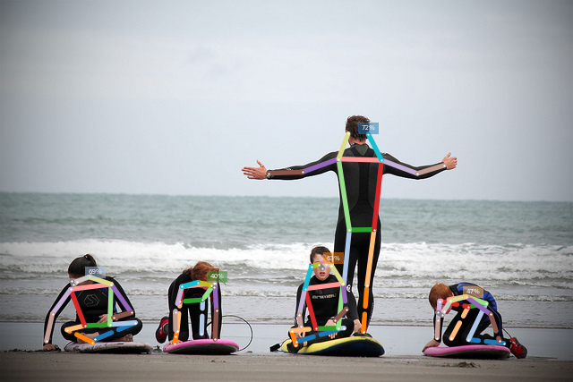

Sven Kreiss, 2020
Prediction¶
Use OpenPifPaf from the command line to run multi-person pose estimation on images. For programmatic predictions, please refer to Prediction API. Below is a short intro to running prediction on videos.
Run openpifpaf.predict on an image:
!python -m openpifpaf.predict coco/000000081988.jpg --image-output --json-output --debug
DEBUG:__main__:neural network device: cpu
/opt/hostedtoolcache/Python/3.7.9/x64/lib/python3.7/site-packages/torch/serialization.py:649: SourceChangeWarning: source code of class 'openpifpaf.network.nets.Shell' has changed. you can retrieve the original source code by accessing the object's source attribute or set `torch.nn.Module.dump_patches = True` and use the patch tool to revert the changes.
warnings.warn(msg, SourceChangeWarning)
/opt/hostedtoolcache/Python/3.7.9/x64/lib/python3.7/site-packages/torch/serialization.py:649: SourceChangeWarning: source code of class 'torch.nn.modules.container.Sequential' has changed. you can retrieve the original source code by accessing the object's source attribute or set `torch.nn.Module.dump_patches = True` and use the patch tool to revert the changes.
warnings.warn(msg, SourceChangeWarning)
/opt/hostedtoolcache/Python/3.7.9/x64/lib/python3.7/site-packages/torch/serialization.py:649: SourceChangeWarning: source code of class 'torch.nn.modules.conv.Conv2d' has changed. you can retrieve the original source code by accessing the object's source attribute or set `torch.nn.Module.dump_patches = True` and use the patch tool to revert the changes.
warnings.warn(msg, SourceChangeWarning)
/opt/hostedtoolcache/Python/3.7.9/x64/lib/python3.7/site-packages/torch/serialization.py:649: SourceChangeWarning: source code of class 'torch.nn.modules.batchnorm.BatchNorm2d' has changed. you can retrieve the original source code by accessing the object's source attribute or set `torch.nn.Module.dump_patches = True` and use the patch tool to revert the changes.
warnings.warn(msg, SourceChangeWarning)
/opt/hostedtoolcache/Python/3.7.9/x64/lib/python3.7/site-packages/torch/serialization.py:649: SourceChangeWarning: source code of class 'torch.nn.modules.activation.ReLU' has changed. you can retrieve the original source code by accessing the object's source attribute or set `torch.nn.Module.dump_patches = True` and use the patch tool to revert the changes.
warnings.warn(msg, SourceChangeWarning)
/opt/hostedtoolcache/Python/3.7.9/x64/lib/python3.7/site-packages/torch/serialization.py:649: SourceChangeWarning: source code of class 'torch.nn.modules.container.ModuleList' has changed. you can retrieve the original source code by accessing the object's source attribute or set `torch.nn.Module.dump_patches = True` and use the patch tool to revert the changes.
warnings.warn(msg, SourceChangeWarning)
/opt/hostedtoolcache/Python/3.7.9/x64/lib/python3.7/site-packages/torch/serialization.py:649: SourceChangeWarning: source code of class 'torch.nn.modules.dropout.Dropout2d' has changed. you can retrieve the original source code by accessing the object's source attribute or set `torch.nn.Module.dump_patches = True` and use the patch tool to revert the changes.
warnings.warn(msg, SourceChangeWarning)
/opt/hostedtoolcache/Python/3.7.9/x64/lib/python3.7/site-packages/torch/serialization.py:649: SourceChangeWarning: source code of class 'torch.nn.modules.pixelshuffle.PixelShuffle' has changed. you can retrieve the original source code by accessing the object's source attribute or set `torch.nn.Module.dump_patches = True` and use the patch tool to revert the changes.
warnings.warn(msg, SourceChangeWarning)
DEBUG:openpifpaf.decoder.factory:head names = ['cif', 'caf', 'caf25']
DEBUG:openpifpaf.visualizer.base:cif: indices = []
DEBUG:openpifpaf.show.painters:color connections = False, lw = 2, marker = 6
DEBUG:openpifpaf.visualizer.base:caf: indices = []
DEBUG:openpifpaf.show.painters:color connections = False, lw = 2, marker = 6
DEBUG:openpifpaf.decoder.factory:matched 1 decoders
DEBUG:openpifpaf.show.painters:color connections = True, lw = 6, marker = 3
DEBUG:openpifpaf.transforms.pad:valid area before pad: [ 0. 0. 639. 426.], image size = (640, 427)
DEBUG:openpifpaf.transforms.pad:pad with (0, 3, 1, 3)
DEBUG:openpifpaf.transforms.pad:valid area after pad: [ 0. 3. 639. 426.], image size = (641, 433)
DEBUG:openpifpaf.decoder.generator.generator:nn processing time: 0.881s
DEBUG:openpifpaf.decoder.generator.generator:parallel execution with worker <openpifpaf.decoder.generator.generator.DummyPool object at 0x7f80f08e6490>
DEBUG:openpifpaf.decoder.generator.multi:task 0
DEBUG:openpifpaf.decoder.generator.cifcaf:initial annotations = 0
DEBUG:openpifpaf.decoder.cif_hr:target_intensities 0.007s
DEBUG:openpifpaf.decoder.cif_seeds:seeds 681, 0.002s (C++ 0.001s)
DEBUG:openpifpaf.decoder.caf_scored:scored caf (1420, 1305) in 0.006s
DEBUG:openpifpaf.decoder.occupancy:shape = (17, 216, 320), min_scale = 2
DEBUG:openpifpaf.decoder.generator.cifcaf:annotations 5, 0.026s
DEBUG:openpifpaf.decoder.occupancy:shape = (17, 194, 281), min_scale = 2
DEBUG:openpifpaf.decoder.nms:nms = 0.004s
INFO:openpifpaf.decoder.generator.cifcaf:5 annotations: [13, 16, 17, 15, 14]
DEBUG:openpifpaf.decoder.generator.generator:time: nn = 0.882s, dec = 0.034s
INFO:__main__:batch 0: coco/000000081988.jpg
DEBUG:__main__:json output = coco/000000081988.jpg.predictions.json
DEBUG:__main__:image output = coco/000000081988.jpg.predictions.png
This command produced two outputs: an image and a json file.
You can provide file or folder arguments to the --image-output and --json-output flags.
Here, we used the default which created these two files:
coco/000000081988.jpg.predictions.png
coco/000000081988.jpg.predictions.json
Here is the image:

And below is the json output. The json data is a list where each entry in the list corresponds to one pose annotation. In this case, there are five entries corresponding to the five people in the image. Each annotation contains information on "keypoints", "bbox", "score" and "category_id".
All coordinates are in pixel coordinates. The "keypoints" entry is in COCO format with triples of (x, y, c) (c for confidence) for every joint as listed under COCO Person Keypoints. The pixel coordinates have sub-pixel accuracy, i.e. 10.5 means the joint is between pixel 10 and 11.
In rare cases, joints can be localized outside the field of view and then the pixel coordinates can be negative. When c is zero, the joint was not detected.
The "bbox" (bounding box) format is (x, y, w, h): the \((x, y)\) coordinate of the top-left corner followed by width and height.
The "score" is a number between zero and one.
!python -m json.tool coco/000000081988.jpg.predictions.json
[
{
"keypoints": [
0.0,
-3.0,
0.0,
0.0,
-3.0,
0.0,
0.0,
-3.0,
0.0,
388.38,
148.98,
0.87,
410.88,
149.55,
0.73,
377.69,
177.19,
0.95,
425.73,
178.56,
0.99,
337.29,
191.73,
0.88,
465.67,
193.43,
0.94,
299.17,
193.22,
0.86,
495.84,
184.25,
0.9,
389.73,
256.5,
0.85,
417.31,
256.11,
0.89,
383.38,
320.97,
0.59,
409.42,
318.38,
0.86,
0.0,
-3.0,
0.0,
405.38,
370.19,
0.49
],
"bbox": [
287.42,
141.87,
220.04,
239.5
],
"score": 0.72,
"category_id": 1
},
{
"keypoints": [
81.59,
317.88,
0.64,
85.29,
314.18,
0.75,
79.48,
313.36,
0.48,
99.02,
308.97,
0.73,
0.0,
-3.0,
0.0,
123.71,
317.22,
0.81,
78.39,
322.9,
0.83,
146.04,
348.96,
0.72,
58.09,
350.31,
0.8,
126.2,
354.54,
0.72,
51.27,
380.8,
0.75,
122.22,
362.36,
0.77,
94.14,
363.54,
0.9,
150.83,
360.09,
0.63,
74.27,
368.15,
0.75,
105.82,
378.92,
0.32,
102.85,
382.2,
0.26
],
"bbox": [
45.26,
305.54,
113.37,
84.43
],
"score": 0.694,
"category_id": 1
},
{
"keypoints": [
359.83,
299.21,
0.76,
363.12,
294.43,
0.79,
355.2,
295.04,
0.91,
369.67,
296.1,
0.58,
347.37,
297.59,
0.79,
382.58,
316.68,
0.66,
340.06,
322.22,
0.77,
386.22,
345.11,
0.46,
333.92,
351.35,
0.67,
373.69,
357.93,
0.35,
335.53,
364.29,
0.7,
377.47,
366.32,
0.58,
352.29,
366.84,
0.68,
383.81,
366.19,
0.21,
325.14,
369.06,
0.24,
330.71,
381.33,
0.16,
329.97,
385.15,
0.18
],
"bbox": [
318.0,
291.97,
75.31,
100.59
],
"score": 0.629,
"category_id": 1
},
{
"keypoints": [
493.5,
351.85,
0.22,
495.17,
347.44,
0.39,
488.45,
348.91,
0.19,
502.59,
335.88,
0.53,
0.0,
-3.0,
0.0,
520.05,
331.08,
0.78,
490.57,
336.11,
0.48,
547.41,
350.79,
0.57,
488.76,
357.33,
0.43,
557.38,
380.73,
0.25,
487.73,
377.16,
0.47,
542.35,
338.74,
0.62,
522.65,
342.29,
0.53,
522.81,
379.02,
0.61,
503.65,
377.77,
0.49,
562.1,
383.24,
0.3,
0.0,
-3.0,
0.0
],
"bbox": [
483.37,
325.28,
85.06,
64.28
],
"score": 0.473,
"category_id": 1
},
{
"keypoints": [
238.99,
320.16,
0.23,
238.83,
316.03,
0.13,
235.06,
318.14,
0.23,
0.0,
-3.0,
0.0,
220.45,
315.08,
0.38,
239.62,
315.77,
0.56,
202.62,
319.91,
0.51,
241.07,
346.36,
0.7,
195.17,
348.67,
0.44,
239.73,
378.73,
0.56,
195.65,
375.62,
0.38,
225.91,
334.73,
0.45,
200.7,
336.54,
0.4,
224.69,
372.49,
0.35,
197.32,
369.7,
0.2,
0.0,
-3.0,
0.0,
194.69,
383.12,
0.1
],
"bbox": [
188.58,
310.44,
57.15,
78.79
],
"score": 0.402,
"category_id": 1
}
]
Optional Arguments¶
--show: show interactive matplotlib output--debug-images: enable debug messages and debug plots
Full list of arguments is available with --help: CLI help for predict.
Video¶
python3 -m openpifpaf.video --source myvideotoprocess.mp4 --video-output --json-output
Requires OpenCV. The --video-output option also requires matplotlib.
Replace myvideotoprocess.mp4 with 0 for webcam0 or other OpenCV compatible sources.
The full list of arguments is available with --help: CLI help for video.
Image credit: “Learning to surf” by fotologic which is licensed under CC-BY-2.0.